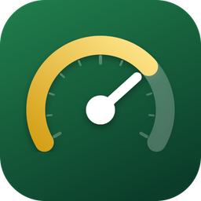

Level Up IT
CCST Exam Prep
Level Up IT is a free study app for the Cisco Certified Support Technician (CCST) IT Support exam (100-140). It gives you a short daily plan, flashcards, quick questions, and timed practice exams, and it shows your progress as you level up from New Recruit to Certified Pro.
Support
Questions, problems, or a mistake in a card or question? Open a request on the support page (a free GitHub account is needed), or ask your instructor.
Common questions
How do I reset my progress? Open the app, tap the gear on the Today screen, then Reset progress.
How do I change my exam date? Tap the days chip at the top of the Today screen.
How do I send my progress to my teacher? Progress tab, then Email my progress. Your own mail app opens with the report; nothing is sent until you press Send.